Service Design
MEMO - A Service for Alzheimer’s Patient & Family
A service concept that helps carers keep Alzheimer’s patients involved, present, and connected.
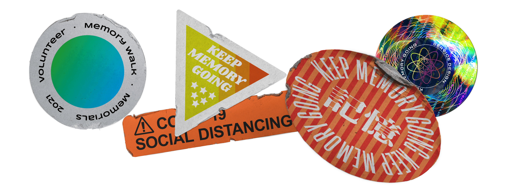
Project Overview
The project helps carers better engage Alzheimer’s patients in life and activities, which can help slow down the condition’s progression, reduce the length of time spent caring, and reduce carer stress.
Introduction
The service uses digital means to stimulate more content and communication by pooling resources and user content, and carers and patients are connected to more people, which improves their lives, takes away their anxiety and gives them back their confidence.
The model of two cycles of content: the cycle of user content and user content and the cycle of online content and offline content, can be exponentially more effective and innovative.
By extending the touchpoints, getting closer to the target group and expanding the reachable population and generating a growth effect among the service participants and increasing the service’s impact - more and more people involved - more and more people learning about AD and patients - destigmatisation and Awareness-raising and understanding of the disease - reducing long term care in society.
Research process
The exploration process follows a person who knows nothing about AD and starts to go through the process of understanding AD.
It starts with basic knowledge, then moves on to the consultation process, the stages of disease development and current interventions, and finally to care. The study is based on interviews and desktop research, exploring the issues that different people, at different stages of their lives, may encounter.
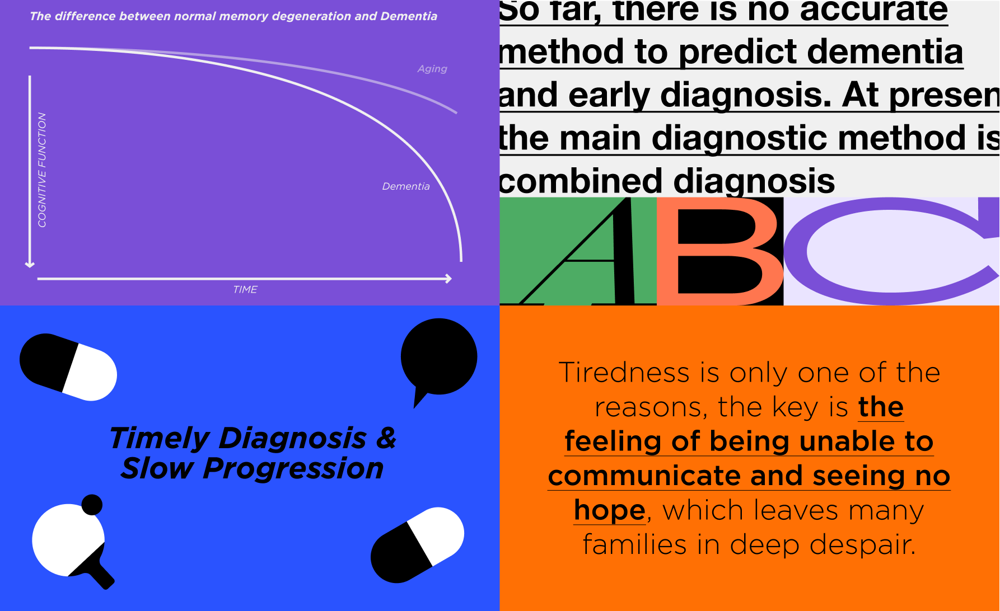
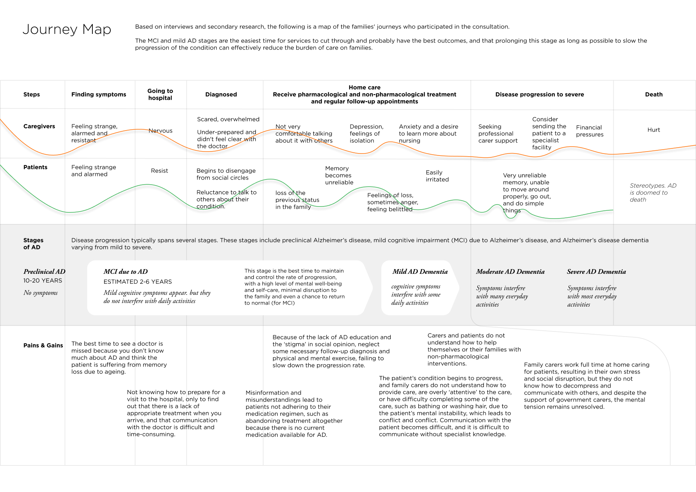
Findings
- Eliminate stress and reveal carer's heart
- Raising awareness and eliminating stigma
- Reduce shame and boost confidence
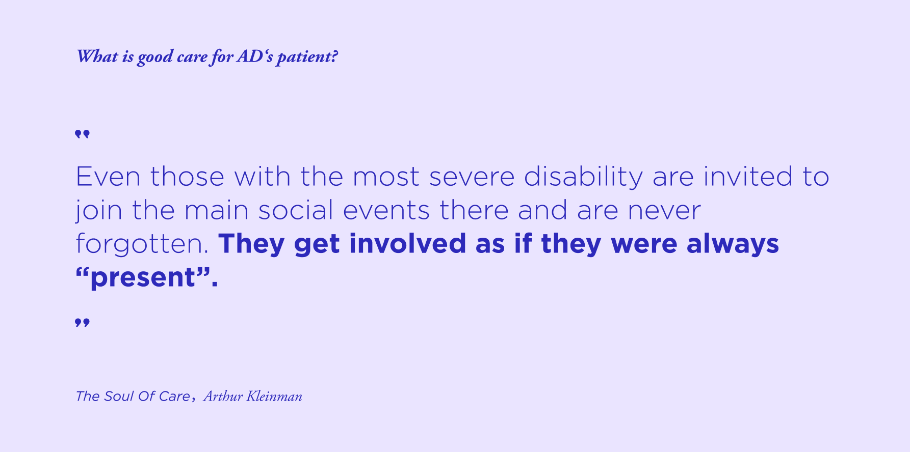
Research into the current state of medicine has allowed us to identify a window of opportunity to emerge - the MCI due to AD and the Mild AD stage.
This is the time when interventions, both pharmacological and non-pharmacological, are the best time to improve the family’s life status. This means that how to get people to ‘catch it earlier’ and ‘delay it’ is a key point in our subsequent design.
Based on previous research with many people, a new and vital role came into our view - the ordinary person. All family carers and patients are initially ordinary people, and it is because of AD that their role starts to change, they begin to learn more and become aware of the abnormalities of those around them, and this is where the problem lies - ordinary people do not know about AD, how to bring their family to the clinic and how to care for the AD patient.
This section focuses on the issues and points the way to the research that will follow.
Persona
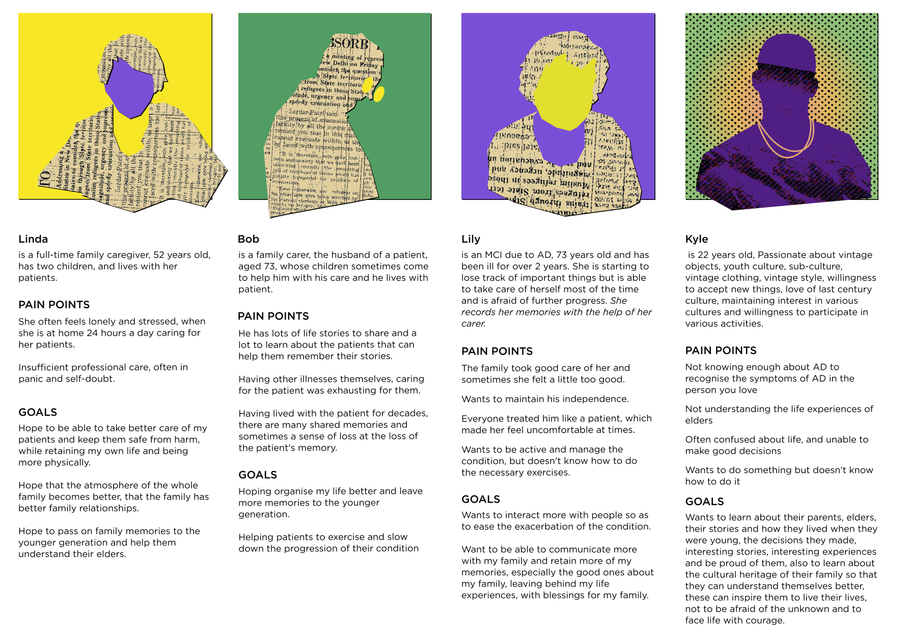
Stakeholder Map
Through interviews with service providers and partners (Regional Fundraising Manager & Cultural Projects Assistant), I was able to understand their business and needs. I updated the content of the stakeholder map and illustrated how they work together, while it shows all stakeholders involved in the project demonstrating roles and relationships.
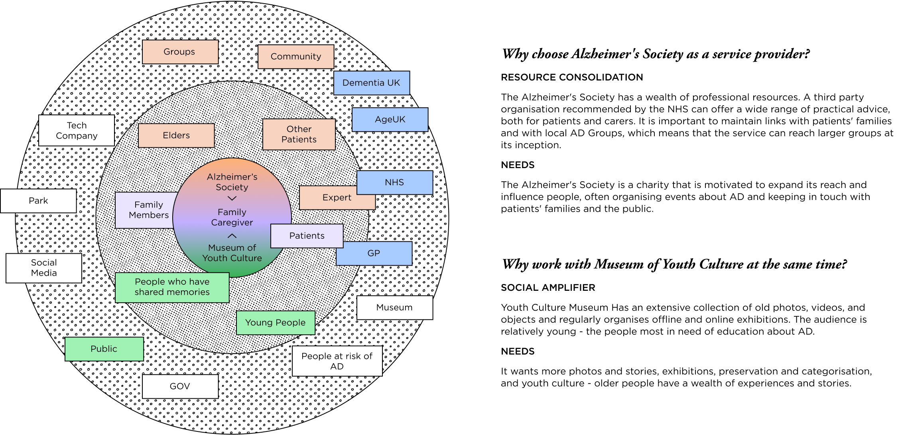
Field Research
Develop
In this phase, we focused on the users (carers, patients and people without knowledge of AD) and developed possible services from their needs by reconfiguring the resources of service providers and partners. A Co-Design Workshop was held to generate more ideas and test the concept’s operationalisation through MVP. In this way, the service concept and prototype were iterated to make it more tangible and accessible.
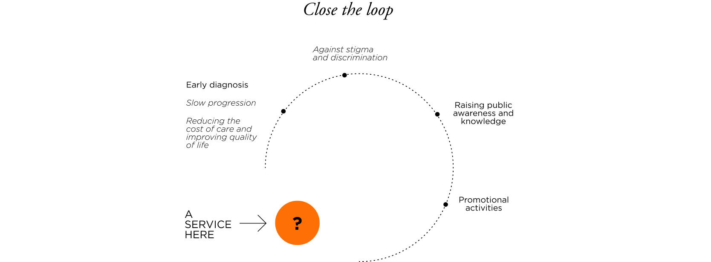
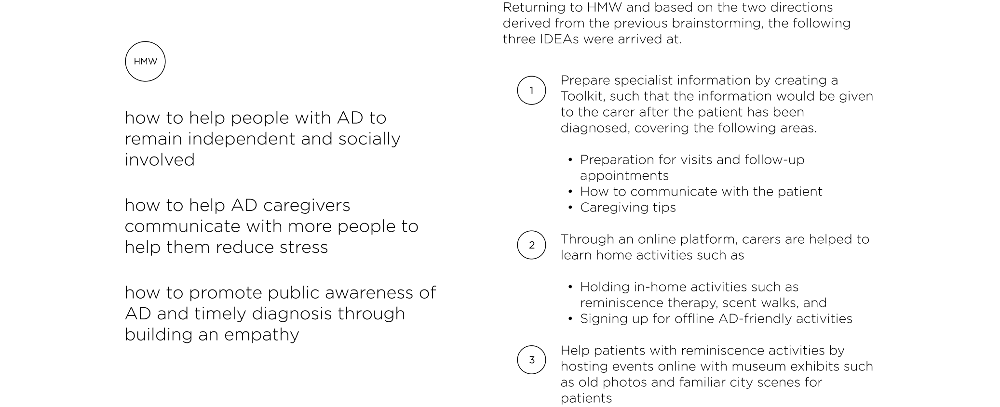
Service blueprint
The service is provided by Alzheimer’s Society, which is responsible for the day-to-day maintenance and knowledge base. At the same time, hospitals, other care centres and museums can act as separate accounts in the service, providing information on their specialities, initiating events, and collecting works for exhibitions. The Alzheimer’s Society can publish online activities such as home craft activities, gardening activities and how-to’s for these activities. And users can also upload their work for more people to see (as well as a tutorial). NHS can also join the platform and provide medical advice to users. The Museum can use existing exhibits (photos, stories), send them to the online platform, and create a second take on them (uploading their related stories). These works can also interact online and offline so that a cycle of content accumulation can be achieved.
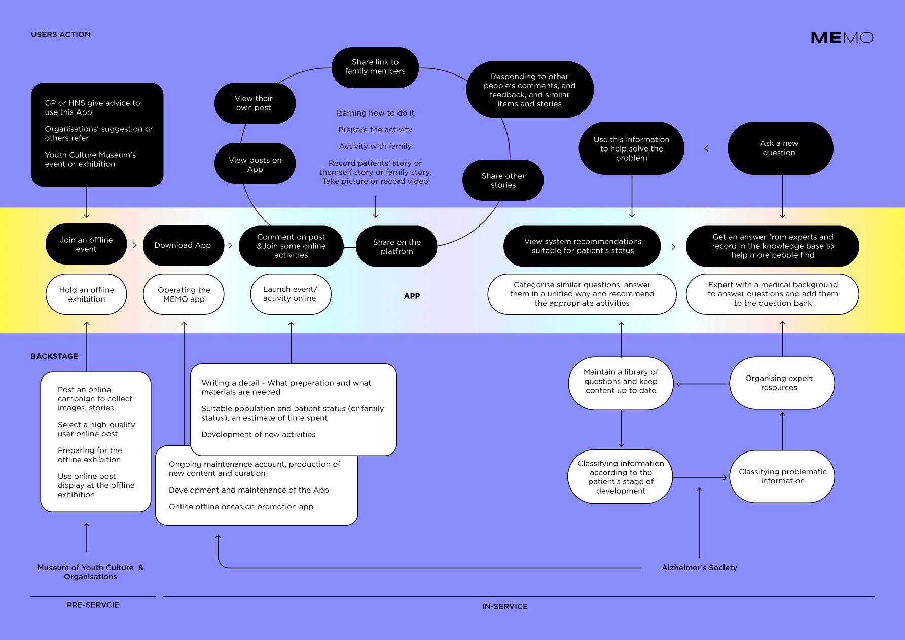
Final work
Service concept
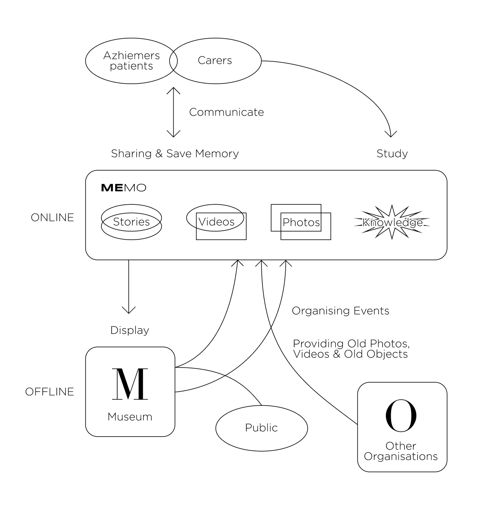
MEMO has created an online communication platform and knowledge base. The users (patients and carers) are reached through an app. The communication platform contains photos, stories, guidance on family activities, online activities and offline activities. Museums and users provide the content. The content will be categorised by topic so that a pool of shared memories can be built up. Users can reflect on topics they find interesting and post their own stories through images, scanned photos, audio, video, and physical objects (photos) to assist in creating stories. Users can choose whether or not to make their content public. The online knowledge base is prepared for families at different stages of AD. The content of the knowledge base is constantly being added to in response to users' questions. At the same time, similar or identical questions are organised together to avoid too much information, which can lead to loss of validity and difficulty in finding it. Physical museums and organisations will also be involved in MEMO, launching a call to collect the history and culture of ordinary people, with some of the work eventually being exhibited offline. The museum's display will be accompanied by relevant AD collateral and brochures and MEMO promotional materials, which will broaden the group of people who are knowledgeable about AD.
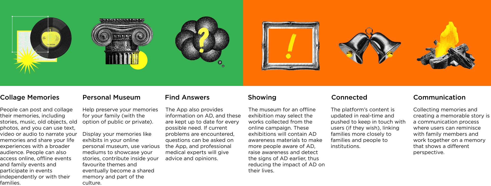
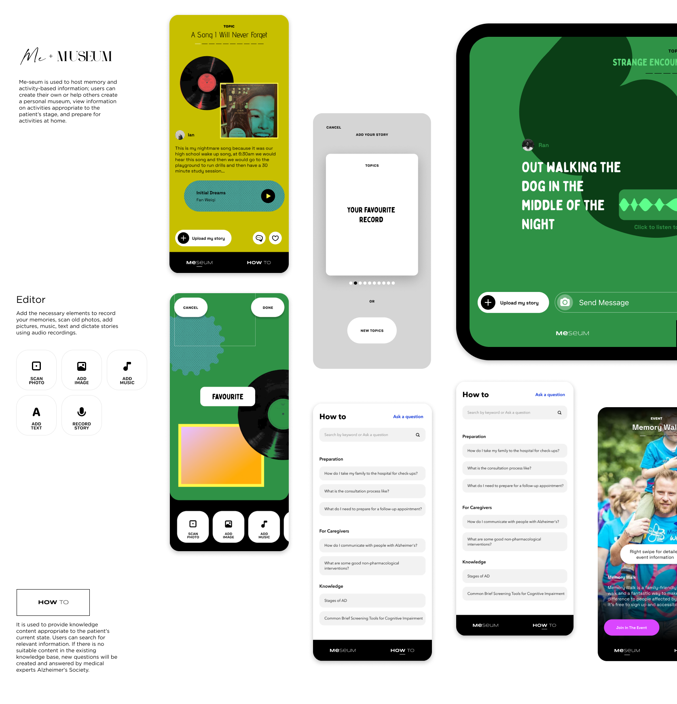
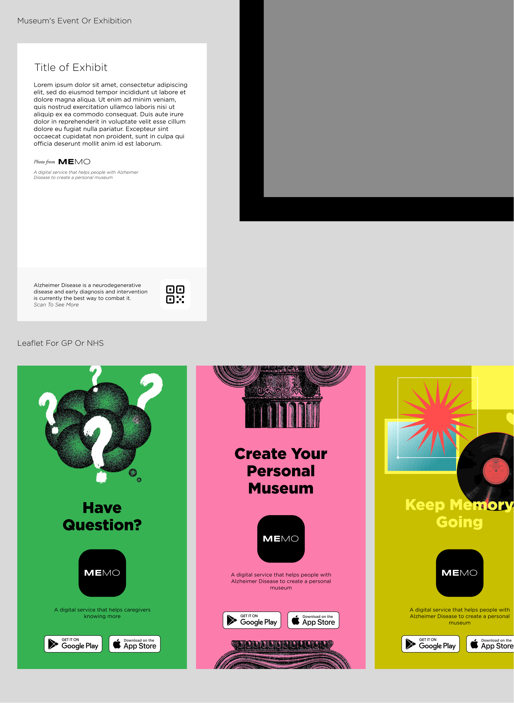
Conclusion
MEMO wants to help caregivers make Alzheimer’s patients feel “present”, still involved and not omitted - that is the best care told in “The Soul of Care.”
Carers want to take care of their loved and MEMO intends to preserve that love and pass it on to more people. Passing it on to more caregivers can also be passed on to more ordinary people to make them more aware of Alzheimer’s. Public awareness increase is slow, but we believe it is currently the most powerful tool in the fight against Alzheimer’s.
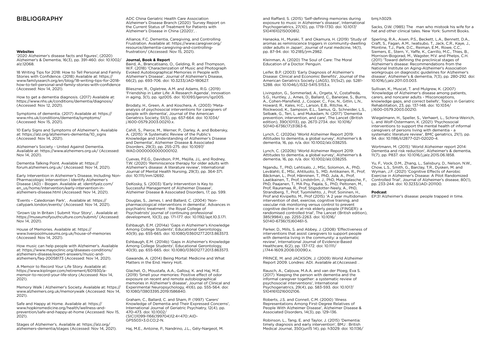